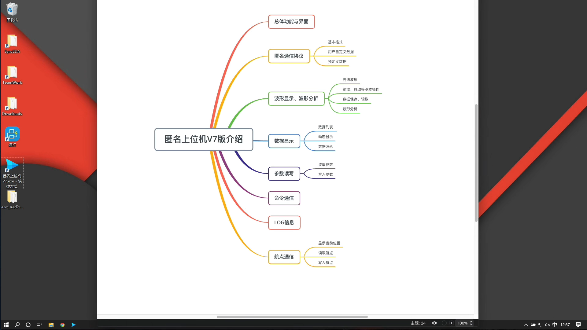
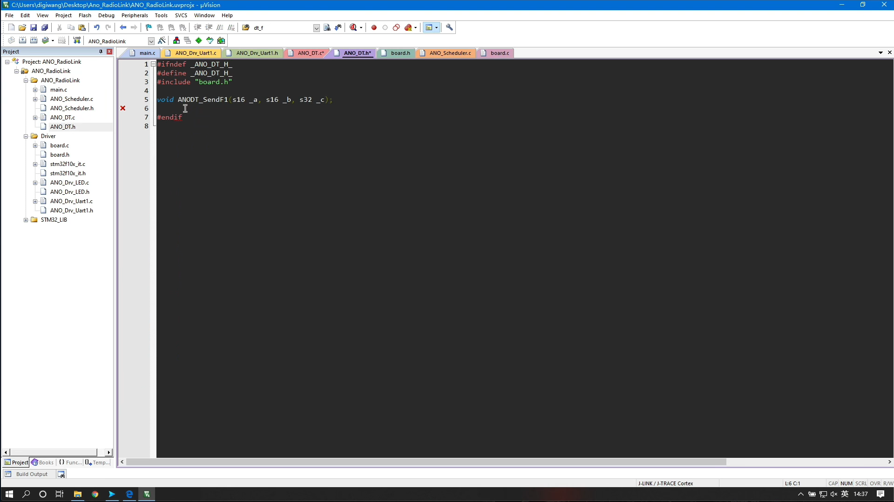
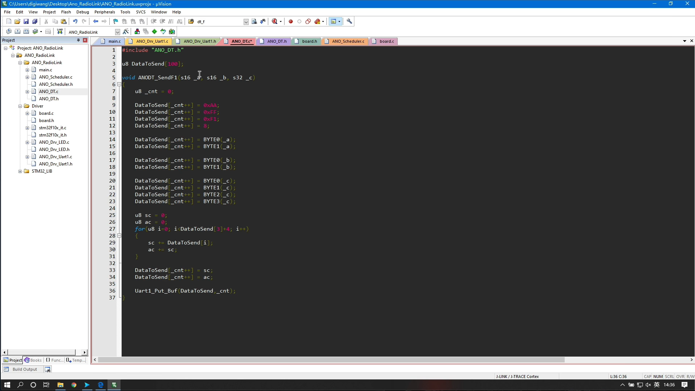
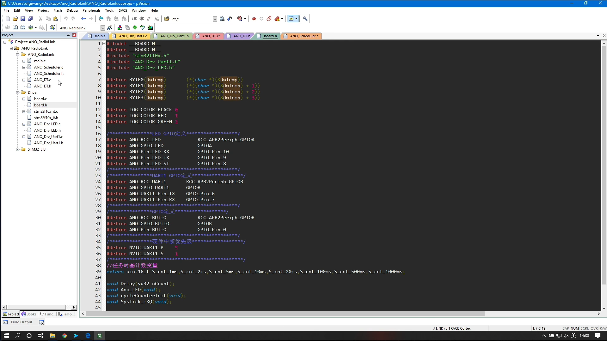
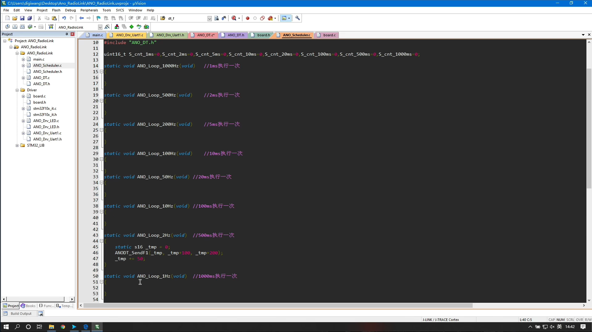
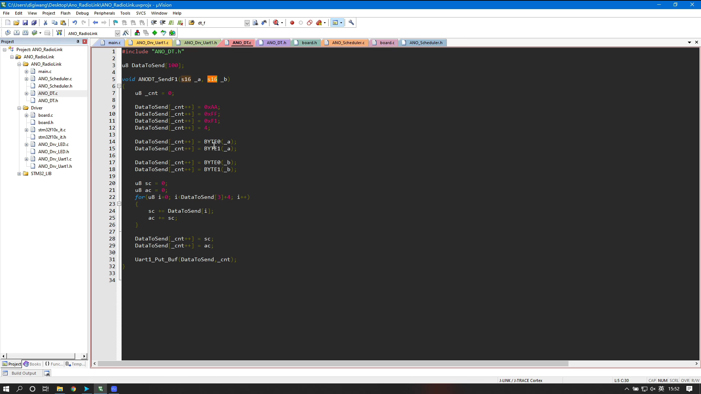
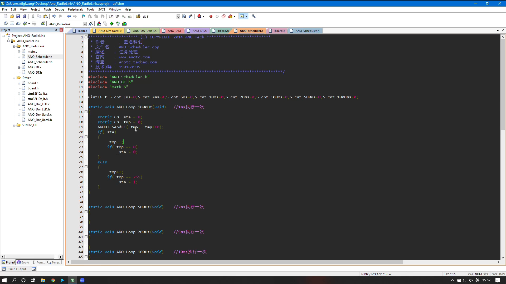

文章
22
标签
15
分类
4
首页
时间轴
标签
目录
清单
音乐
电影
照片
友链
关于
笔记本
搜索
首页
时间轴
标签
目录
清单
音乐
电影
照片
友链
关于
匿名上位机
发表于
2022-03-23
|
更新于
2022-04-16
|
字数总计:
0
|
阅读时长:
1分钟
|
阅读量:







文章作者:
YLLDML
文章链接:
http://ylldml.github.io/post/up-computer.html
版权声明:
本博客所有文章除特别声明外，均采用
CC BY-NC-SA 4.0
许可协议。转载请注明来自
笔记本
！
上一篇
智能家居（物联网）
下一篇
大三下复习
YLLDML
记录点滴
文章
22
标签
15
分类
4
主题 Github
公告
这是我的笔记本
最新文章
操作系统
2022-04-30
智能家居
2022-04-28
esp8266互联网学习笔记
2022-04-23
text
2022-04-10
C
2022-04-09
繁
本地搜索
数据库加载中